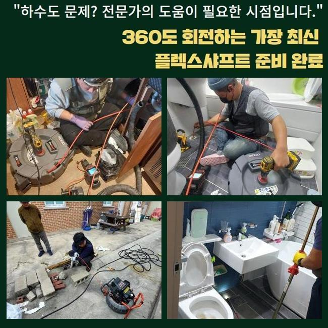
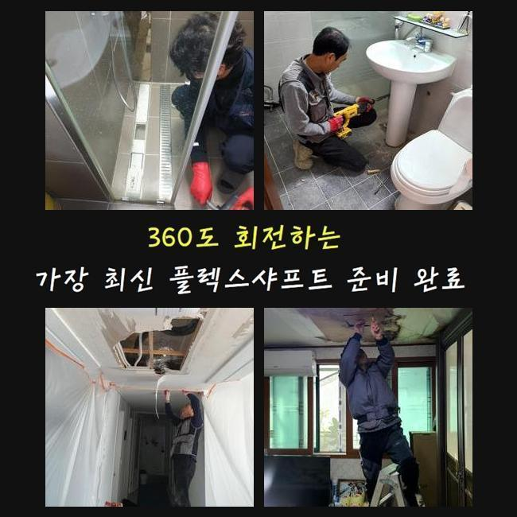
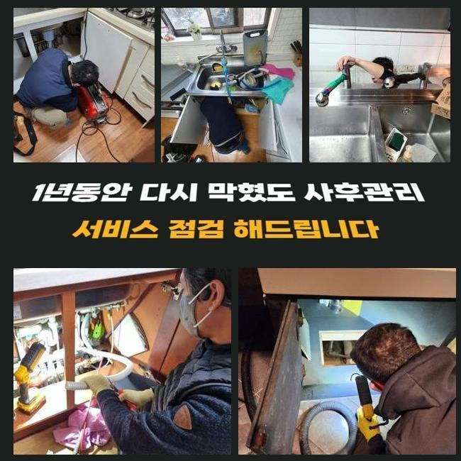
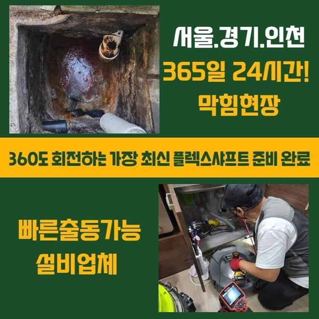
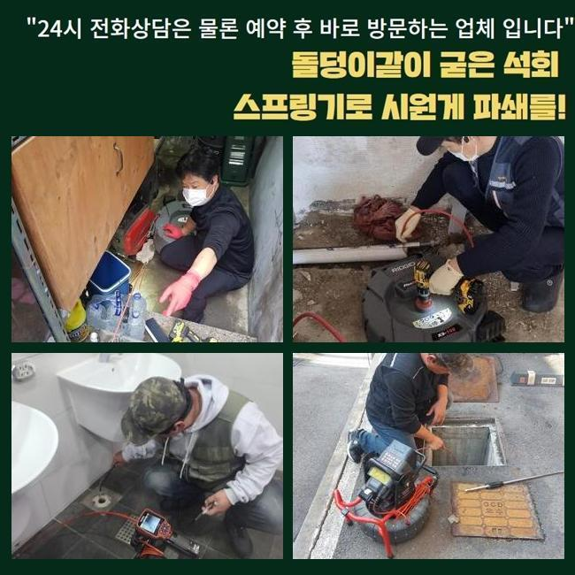
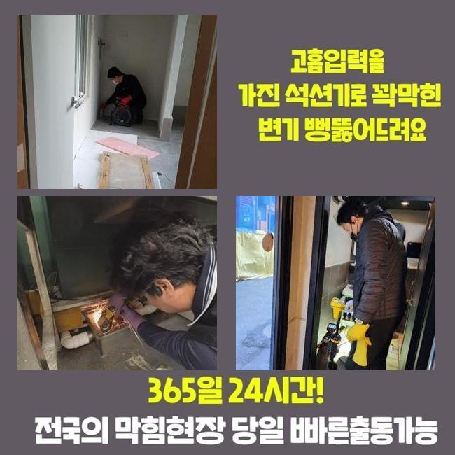
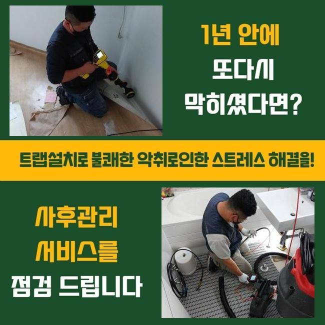

🏠 미추홀구 숭의동세탁실막힘 주안동 하수구청소 배관막힘
용인 하수구막힘 전문 시공 후기

📋 작업 개요
- 위치: 용인
- 서비스 유형: 하수구막힘, 배관막힘, 누수수리, 역류해결, 배관청소, 고압세척, 설비공사, 배관보수, 악취차단
- 작업 일시: 2024. 11. 25. 18:13
- 업체명: 하수구수사대 (010-5615-2118)
🔍 문제 상황
미추홀구 숭의동세탁실막힘 주안동 하수구청소 배관막힘
물이 안내려가서 고생하셨던 적이 한번 정도는 있었으리라 생각을 하는데요
이번에 소개해드리는 시공사례를 읽어보신다면 보탬이 될것이라 여깁니다
우리팀은 저번주 화장실 물막힘으로 문의하신 고객의 장애를 처리했어요
고객께서는 욕실 배수공에 잔류하는 오수가 기다려도 빠져나가지않아 일상에 불편함이 가속되셨는데 저희들이 맡아서 파이프 상태를 신중하게 파악하고 원인을 찾아냈어요
또한 그것을 재빠르게 처치해 의뢰인분이 시설물을 순조롭게 쓰시게끔 조력했어요
그것에 더하여 의뢰인분에게 유지보수 팁 등을 말해드려 이후에 나타날수 있는 배관 고장을 방지하게끔 조치해 드렸답니다
P형 트랩의 경우 배관의 내측에서 하수가 정상적으로 빠져나가는걸 억제하여 배관막힘을 촉발시킬수가 있죠
거기에 더해 역류문제까지 발생 가능한 경우 물차단이 원만하게 이루어지지 않아 부가적 문제들이 발현될수 있답니다
p형트랩은 위생적인 시설물 관리에는 효과적이나 이물이 정체되고 막힘현상을 야기하는 결점도 존재해요
그렇기 때문에 p트랩 구조물을 이용하신다면 일상중의 주기적인 청소가 필요해요
누적된 수돗물을 처치하고 부품을 점검하여 적합한 때에 세척을 이행하여서 배수기능이 제대로 될수있게 만들어야하죠
이를 누락한다면 하수구가 지속적으로 차단되어 곤란한 상황이 출몰하기 쉬운 수 있답니다
그러하기에 정기적인 진단과 소제가 요청됩니다

🔎 원인 분석
💡 전문가 진단: 정밀 진단 장비를 사용하여 슬러지의 고착 여부를 판명하고 타격/세척 작업을 실시했습니다.
우선적으로 하수구고장을 처치하려 아래세대로 가서 파이프점검구를 열어보기로 했어요
찌꺼기들이 분출되어 바닥면이 지저분해지지 않게끔 보양지를 펼쳐서 세정을 이어나갔습니다
업무 전엔 이웃주민과의 다툼을 차단하는 사전조율을 하는게 좋아요
이를 이행치 아니하면 시공시간이 늘어지거나 심각한 상황에선 수선자체를 못할수도 있기 때문이죠
우리들은 관련된 대처법을 체화하고 있기 때문에 유연히 응대해드리고 있죠
이러한 사전적 대응을 통해서 침착하게 수리를 해나갔고 통수고장을 해소할수 있었어요
이런 과정을 바탕으로 이후에 동일한 문제점이 발생 가능한 경우에는 여유롭게 대응해 나갈수가 있는거죠
하수관이 막혔다면 화학용품을 써보거나 집안의 도구를 통해서 처리하는 경우도 있으나 여러차례 시도해도 복구가 무망하다면 전문업체의 수리를 받아보시는게 바람직해요
우리들은 최첨단 장비들과 테크닉으로 효율적으로 고장을 처리해드릴수가 있죠
요즈음 하수구 세척과 관련한 전문가들이 많기 때문에 결단에 곤란함이 있을것으로 압니다
또 정확치않은 사람들도 꽤 있는걸로 알고 있어요
그런데서 찾아오면 까다로운 문제들에 부닥쳤을때 포기해버리거나 건성으로 덮어버리고 귀가하기도 합니다
우리팀은 이와 달리 끝까지 책임지고 작업을 마무리한다는걸 말씀드립니다
그리고 의뢰자의 요구에 조속히 반응하여 막힘을 처리합니다

🔧 작업 과정
늦어지면 사태는 더더욱 심화되기 때문이에요
배관이 막혀버리면 역류증상이 발현되거나 타 세대로 전이될수 있죠
그러한 상황에선 조속히 대응해야 돼요
세대에 올라가 양상을 관찰하니 연속적으로 물기가 하강하고 있었어요
잔재들이 뭉쳐서 나타날수도 있지만 때에 따라 트랩에 고장이 일어났을때도 있죠
그러므로 해결을 하려면 근본적인 요소를 파악하는 것이 필요해요
요번엔 슬러지 소제만으론 완수를 예측하기 힘겨운 사태였기에 그것을 전제하고 세척작업을 속행하였어요
해당되는 장애가 나타나는건 관에 수돗물이 편하게 내려가지 않아서입니다
만일 이런 고장이 생겨나면 속히 우리에게 전화해주세요
우선 관로안에 고인 성분을 제거하기 위하여 흡입기기를 쓰기로 했어요
석션기구는 파이프 안의 이물질을 빠르게 없애주고 막힘을 해결합니다
석션장비로 노폐물이 쌓인 처소를 빠르게 처리했어요
이후 내시경장비를 사용해서 내부를 들여다보았는데 노폐물이 아직 꺾인 관로에 잔류하고 있는걸 발견했죠
그 성분들을 없애려 샤프트 기계와 배관카메라를 이용해서 완벽하게 처리했어요
석션장비로도 처리가 안되는 이물들은 파쇄공정을 더하여 처리할수가 존재해요
관 속에 노폐물이 상존한다면 그것 때문에 부가적인 트러블이 생길수있는 수 있으므로 깔끔한 정리가 필수죠
간헐적으로 소제구덮개를 개방하여 별도의 청소를 시행하는 형편도 있어요
이러한 부품으로 인하여 청소업무가 복잡해지기도 하나 저희팀은 능숙한 테크닉으로 조속히 마무리해드려요
아랫층의 상단 하수관 뚜껑을 탈거하고 샤프트기를 사용하여 세척하였습니다
다량의 슬러지가 적체된게 드러났습니다
떨어져나간 슬러지들을 석션기기로 처리하고 관 안을 소형카메라로 살펴본뒤 사용에 이상이 없단 사실을 파악하였죠
공사를 끝난다음 배수관마개를 복원한뒤 누수 여부를 살펴본뒤 지장이 없다는걸 확인하였어요
내시경기기를 활용하여 금번에 작업한 지점의 관로 차단은 여러 노폐물들과 세정제가 뒤섞여 발생한 것으로 파악되었어요


✅ 작업 완료
이런 사태들은 우리팀이 자주 만나는 말썽의 일부이며 정례적인 세척이 요구된다고 말씀드렸죠
시간에 상관없이 내방하여 관로정체의 수리를 도와드릴 수 있죠
관 안을 탐검하는 내시경설비는 이물질의 양을 측정하고 본질적인 장애를 들춰내는데 지대한 공헌을 하죠
금번 욕실의 하수관 정체는 배관의 내측에 있었으며 p트랩 근방에 다양한 고형물들이 채워진게 확인되었죠
저희들은 계속해서 꾸준한 기술공부를 하여 고퀄리티의 공정을 해드릴수 있게 노력할게요
물막힘이 나타나면 망설이지말고 즉시 저희쪽으로 의뢰하시길 바랍니다




⚠️ 베란다 누수 및 방수 관리 방법
- ✅ 비가 많이 올 때 창틀 주변이나 아래층 천장에 얼룩이 생기는지 정기적으로 확인해 보세요.
- ✅ 우수관 주변 실리콘 마감이 들뜨거나 깨진 틈새가 있는지 손상 여부를 수시로 체크하세요.
- ✅ 베란다 바닥 타일의 줄눈(메지)이 소실되면 그 틈으로 물이 침투하여 누수가 유발됩니다.
- ✅ 누수 의심 증상 발견 시 방치하면 아래층 손실이 커지므로 즉시 전문가의 진단을 받으십시오.
💡 핵심 정리
- 확실한 장비 작업(내시경 점검 및 샤프트 스케일링)으로 원인을 뿌리 뽑습니다.
- 작업 후 1년 이내에 동일한 부위 재발 시 100% 무상 A/S 서비스를 보장합니다.
- 서울 · 경기 · 인천 전 지역에 24시간 언제든 긴급 출동할 수 있도록 항시 대기 중입니다.
❓ 자주 묻는 질문 (FAQ)
🚨 용인 하수구막힘 문제로 고민이신가요?
정확한 원인 진단과 확실한 시공으로 재발 없는 해결을 약속드립니다.
24시간 긴급 출동 | 서울 · 경기 · 인천 전지역 | 1년 내 재발 시 무상 A/S